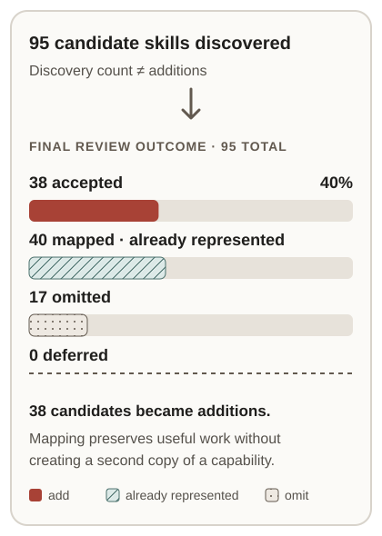
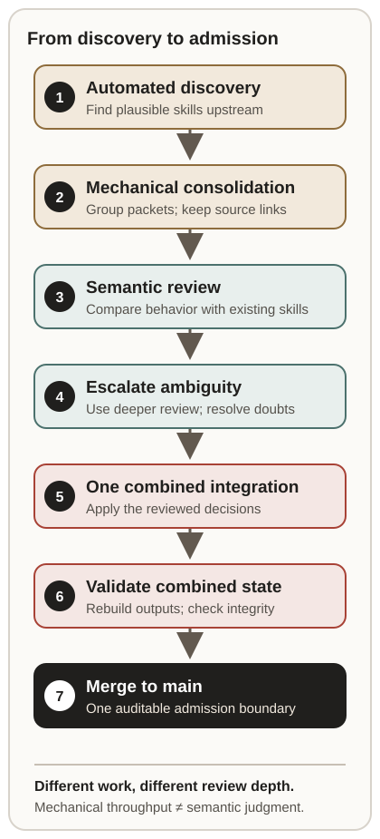
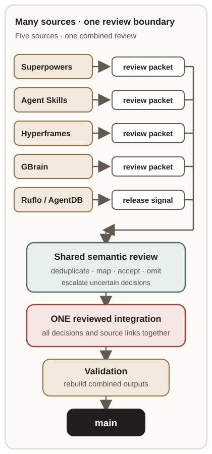

Discovery Is Not Admission: What 95 Agent-Skill Candidates Taught Us
When discovery works, admission becomes the problem
An agent-skill watcher did what it was meant to do: notice upstream release changes and gather possible additions from projects building agent workflows, coding skills, video tools, and persistent agent memory. Five streams converged: Superpowers, Addy Osmani’s Agent Skills, Hyperframes, GBrain, and Ruflo/AgentDB.
That success created a different question. When a release advertises dozens of plausible skills, should a registry reproduce every name—or identify which behaviors are truly distinct, reusable capabilities?
In this batch, the answer was emphatically not “add all 95.” The reviewed outcomes were 38 accepted, 40 mapped to capabilities Gaia already represented, 17 omitted, and zero deferred. These are measured counts from the integration record, not a benchmark of the watcher or a general estimate of curation accuracy.

A name is not a capability boundary
Upstream projects package work for their own tools and communities. That context is valuable, but it does not determine whether each folder deserves a separate place in a cross-project registry.
The release-pinned source files show why the question has to be semantic. Superpowers describes a software-development methodology and includes explicit procedures for test-driven development and writing skills. Addy’s collection includes practices such as doubt-driven development and source-driven development. Hyperframes describes an agent-oriented way to create video from HTML, with workflows such as general video composition. GBrain is an agent “brain” project whose release contains workflows spanning research, knowledge intake, and maintenance; its research-compendium is one concrete example. The Ruflo-linked AgentDB change in this batch was narrow: a release/provenance sync, with no candidate skill additions recorded.
These projects are not interchangeable, and the examples above do not imply that each source skill is unique. The same behavior can appear under different names; a distinct behavior can also be buried inside a project-specific package. Names, folder counts, and release notes help locate candidates, but deciding where one capability ends and another begins takes comparison of the actual instructions and existing entries. A shared package format does not answer that semantic question: the Agent Skills specification defines a skill directory around a SKILL.md file with metadata and instructions, not a cross-project test for capability identity.
That is what “mapped” meant here. It did not mean “rejected as useless.” It meant that the candidate was worth recognizing, but not as another capability entry. Likewise, omission was a deliberate boundary: some items were product-local utilities, narrow wrappers, or otherwise too dependent on the upstream project to stand alone. The registry’s usefulness is not measured by how many directories an upstream release happens to contain.
Separate throughput from judgment
A dependable process has at least two different kinds of work. Mechanical tasks—collecting source files, preserving provenance, consolidating review packets, and regenerating output—benefit from repeatability and throughput. Deciding whether two procedures express the same capability, or whether a behavior is portable beyond its home product, requires semantic review.
In this integration, 31 cases were explicitly routed through a stronger review pass. The final record says all 31 ended with dispositions and reports zero unresolved escalations. That is different from saying the first pass was right, or that every hard case can be resolved automatically. The final integration record says eight of the 31 dispositions differed from the initial proposals after deeper review and maintainer rulings. Escalation was useful precisely because it preserved the chance to revise an earlier interpretation rather than disguising uncertainty as a confident label.

This separation is an engineering choice, not a claim that one model or one human is infallible. A practical design pattern is to use cheaper, predictable processing for organizing evidence, then reserve deeper reasoning and human attention for disputed boundaries. Every layer should leave enough provenance for the next reviewer to check what the candidate actually contained and why it was accepted, mapped, omitted, or escalated.
Many streams, one admission boundary
The five upstream sources did not each get an independent route to the default branch. Their release updates were brought together as inputs to one reviewed integration. The accepted decisions and source changes were assembled, generated projections were rebuilt from the combined source state, and validation ran against that combined result before the integration reached main.
That sequence matters because generated files are projections, not independent decisions. Combining already-generated outputs from several branches can preserve incompatible snapshots or create noisy conflicts. Rebuilding after the source decisions converge gives reviewers one coherent result to validate. In this batch, the integration record reports that the combined documentation generation and registry validation passed; it also records that a local documentation check initially found installability-index drift, followed by a timeout on its next local run. The final pull request’s required CI checks passed. Keeping both facts in the receipt is more informative than reducing the verification story to “everything was green.”
GitHub’s documentation describes pull requests as a place to propose and review changes before merging, and GitHub Actions as a way to automate repository workflows. Those platform mechanics do not guarantee good curation. They do make it possible to keep many incoming changes reviewable while giving the combined result one explicit merge boundary.

A lesson, not a reliability claim
This one batch does not prove a universal optimum for review depth, show that automation is generally reliable, or establish that the same disposition ratios will recur. It does offer a concrete design pattern worth testing in other registries:
- Treat discovery as candidate generation. Finding a file or release change is not an admission decision.
- Compare behavior, not just labels. Check the upstream instructions against existing capabilities and preserve their source links.
- Make mapping a first-class outcome. A duplicate capability can still contain a useful implementation worth linking.
- Escalate uncertainty with a defined destination. Stronger review should resolve or explicitly retain uncertainty—not silently convert it to “yes.”
- Integrate once from canonical inputs. Rebuild derived outputs after source decisions converge, then validate the assembled state.
- Record enough to revisit the decision. A future reviewer should be able to see what changed, which version was inspected, and why the outcome was chosen.
The operational handoff also exposed a genuine improvement area: repeated upstream releases refreshed existing Hyperframes and GBrain release threads, while their accumulated candidates needed to be reviewed as consolidated sets. The public triage and integration record documents those refreshes and the decision to consolidate rather than treat each as a clean-slate intake. That is evidence of duplicate-work pressure in this batch—not evidence that the watcher made duplicate admissions. A next iteration could make “already reviewed at this source revision” easier to detect while still allowing a changed source file to re-enter review.
The most useful output of an automated discovery system may therefore be neither a larger list nor a higher acceptance count. It may be a well-sourced set of candidates, explicit non-admissions, and a review boundary that lets people say “already represented,” “not portable,” or “needs another look” without losing the evidence that prompted the question.
0.6.10; examples: doubt-driven development and source-driven development. Repository.